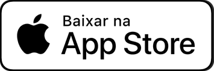

1.1.1Atual
23 de novembro de 2026
Importação mais completa e ajustes na tablatura.
- MelhoriaImportação de links mais completa, inclusive de páginas que trazem só a tablatura.
- NovoAtalho para editar a tablatura: com o cursor sobre ela no editor, o botão aparece acima do teclado.
- MelhoriaNomes de corda com sustenido (C#, F#) e a última nota da linha não encostam mais nas barras da tablatura.
- CorreçãoO texto da cifra não some mais ao apagar perto de uma tablatura.
- CorreçãoAcordes marcados com asterisco (como C*) passam a ser reconhecidos e transpostos.

Compra única · iPhone e iPad